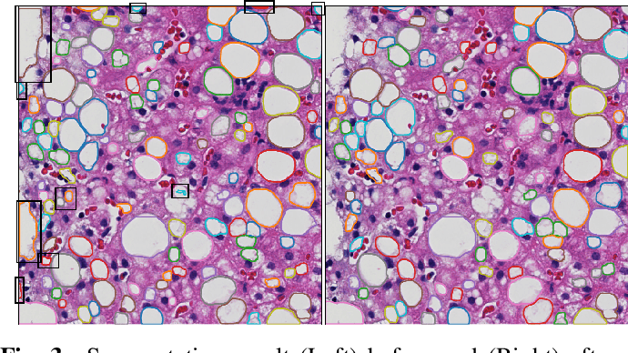

I'm currently a third-year PhD at Emory University supervisied by Prof.
Ashish Sharma.
Before that, I worked with Prof. Jun Kong for two years doing research on whole-slide image segmentation and analysis.
I'm broadly interested in computer vision and medical image processing.
My research involves object detection, object segmentation, and medical image analysis(whole-slide microscopy image and radiology image)
using deep neural networks.
Publications

Liver Steatosis Segmentation With Deep Learning Methods
Xiaoyuan Guo, Fusheng Wang, George Teodoro, Alton B. Farris, Jun Kong.
2019 IEEE 16th International Symposium on Biomedical Imaging (ISBI 2019)
Clumped Nuclei Segmentation with Adjacent Point Match and Local Shape based Intensity Analysis for Overlapped Nuclei in Fluorescence In-Situ Hybridization Images
Xiaoyuan Guo, Hanyi Yu, Blair Rossetti, George Teodoro, Daniel Brat, Jun Kong